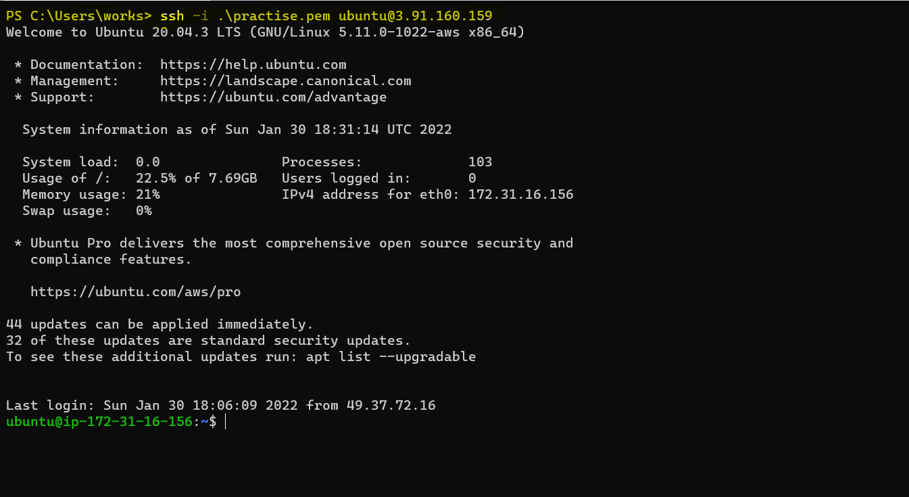
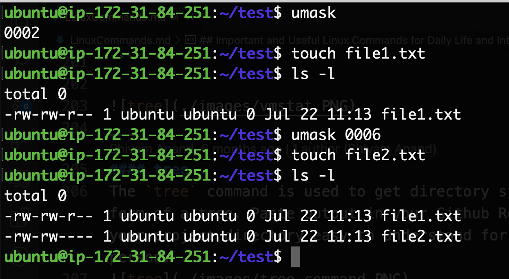

Linux Commands¶
Linux Command Cheat Sheet & Revision for Interviews¶
tree¶
tree command shows the directory structure in a tree format. Very useful for visualization.
.
├── a
│ └── b
│ └── c
│ └── d
├── file.txt
├── input.txt
└── snap
└── tree
├── 18
├── common
└── current -> 18
{kind=link}
curl ifconfig.me¶
It is used to get your current IPv4{kind=link}
top¶
top is an interactive tool. It shows the processes running in your system. It also shows hardware details like CPU usage, RAM Usage, swap memory usage, and no of tasks running.

htop¶
htop is a similar tool to top with some more features added like colours, bars etc.
It is an interactive tool. 
pushd popd dir¶
pushd and popd both are a combination of commands that are used to navigate file-system very similar to cd command. Their special feature is that they can store your paths in a stack
pushd my-folder-1-path # change my directory to folder 1
pushd my-folder-2-path # change my directory to folder 2
pushd my-folder-3-path # change my directory to folder 3
# You are currently in folder 3 and folder-2 and folder-1 are also in stack
# Now you can go back to folder-2 using
popd
# Now you can go back again to folder-1 using
popd
pushd & popd are used when you are navigating FS and want to go back to your previous folder quickly. It is conceptually a stack. {kind=link}
cron cronjob crontab¶
Cron is a system to schedule and automate a task. Say you want to run a program every 5 minutes you can do it using cron.
Cronjob is the actual task defined in the system. While cron can be considered a concept/program, cronjob is the actual entry in the system that will do the work.
Crontab is a table that is defined in a file. This file contains a list of all jobs.
{kind=link}


free¶
free command gives you details about the Primary Memory(RAM) and swap memory.

ps¶
ps is Process Status ps command gives you the list of the running processes and their PIDs. The ps command is non-interactive and can be used with shell scripts.
pa -A # Get all processes
ps -a # get all processes not associated with a terminal
ps -u # view processes along with their owner
ps -x #view process owned by current user(you)
{kind=link}
Difference between jobs, ps, top and htop¶
jobs give the processes that are attached to the current terminal/shell.
ps is non-interactive and can be used with shell scripts.
top is interactive
htop is an advanced form of top
difference vi and vim¶
vim is vi improved. Both of them are text editors. Vim is an extended form of vim with more functionalities. For example, vim supports multi-level undo and redo.
Keep SSH session Alive¶
Does your SSH session breaks? Here is a one-time fix
anacron¶
Anacron is related to cron but has a lot of differences. Anacron is used to schedule tasks. It has an advantage over cron, it can run tasks even after the system was shut down, the next time system starts. It has a disadvantage over cron. Its time granularity is low. Cron has accuracy in minutes but anacron has accuracy in days.
Use case: You might want to back up your favourite local folder to the cloud, you are not in a hurry if your backup is done a few hours later or tomorrow.
chmod¶
chmod is change mode. chmod command is used to change the permission of a file. It can change the read, write and execute permission of users, groups and others.
chmod and chown are very important and require learning and practice.
{kind=link}
chown¶
chown command is used to change the owner of a file Example: If in a system there are users say, Rick and Morty. Morty created a file and he is the owner. Now to change the owner to Rick you would do

uptime¶
It gives how long the system has been running. 
cal¶
It gets the calendar of the current month in the terminal.
January 2022
Su Mo Tu We Th Fr Sa
1
2 3 4 5 6 7 8
9 10 11 12 13 14 15
16 17 18 19 20 21 22
23 24 25 26 27 28 29
30 31
{kind=link}
sleep¶
Create a thread that does nothing for n seconds. Use it to create a delay in your shell script or start a useless process.

run a command in the background using '&'¶
You can run a command line process in the background by ending it with &
{kind=link}
jobs¶
The jobs commands keep track of all the processes running in the background and foreground by the shell. 
Ctrl + z¶
Ctrl + z pauses/suspends a program. You can start the same program in the foreground using fg command or you can run it in the background using bg command.
fg¶
fg stands for foreground. You can bring back a process in the foreground that was running in the background or you can resume a suspended process using fg command.
If there are multiple processes then you might want to pass parameters also like fg 3 for the third process.

bg¶
bg stands for background. You can resume a suspended process in the background using the bg command.
If there are multiple processes then you might want to pass parameters also like bg 2 for the second process.

Difference between bash vs shell¶
Bash is an extended form of the shell. It has more features than shell like endless logs and better compatibility with interactive tools like vim and nano.
bash is located in /bin/bash and the shell is located at /bin/sh.
ssh¶
SSH stands for Secure Shell Protocol is used to connect to remote hosts securely. It is some of the most used commands for people who engage themselves with cloud.
if you ssh very frequently and do not want to use the -i command repeatedly then follow https://github.com/anandshivam44/DevOpsAutomation/blob/main/GenerateKeysAndSSH.md {kind=link}
ping¶
Ping is used for checking the network connectivity to a specified address or IP.
kill¶
It is used to terminate or kill a process manually. Example: You get the PID of a process via ps -A command and you terminate the process by
du -sh /var/¶
gives the disk space occupied by a directory in human-readable format
Get all files and folders size of a Folder Get all files and folders size of a Folder & Sort by ascending order{kind=link}
grep¶
It is a very popular command in Linux. This command is used to search for a text/pattern in a command output or text/pattern in a file. Example: To find in history all the chmod commands you used.
#pipe the output of the history command to grep which will search for sed commands.
history | grep sed
{kind=link}

pkill¶
pkill command is used to kill a process by its name or partial name and not by its PID number Example: There is a python program running. You can terminate it by
sed¶
sed stands for stream editor. It is mostly used to find a replace a word or regex pattern in a file without opening it in any editor like nano, vim, vi. It can also do tasks like insertion, deletion and searching based on regex patterns. Example: replace all Unix in a file with Linux
s: substitute g: do the operation globally {kind=link}
soft link ln -s¶
Softlinks are like Desktop shortcuts you had in your Windows PC. They point to a file. They just store the path of another file and pretend to behave like the original file but they aren't.
Softlinks are called symbolic links. size of a soft link is in bytes or KB because they just store the path of a file. If you delete the actual file in the disk then the soft link file will be pointing to null(nothing) and will have no relevance.
hard link ln¶
Every file in Linux has an inode number. This inode number points to an object in the disk. When you see a file in file explorer. It is just pointing to the object using its Inode Number. When you create a hard link, you can see another that points to the same object using the same inode number. Both the files are the same just different representations. Both files show the same content. If one of them is deleted the other file remains.
The size of a hard link is the actual size of the file because it points to an inode number object in the disk
rsync¶
rsync is remote synchronization. Used to sync files between two remote directories. It can also be used to copy files to your local machine.
It is very useful when you are copying a very large folder. Even if copying breaks in between you can re-run the rsync command and locally it will be like a resume feature.
rsync ~/local-file.txt user@remote-host:~/remote-file.txt
rsync -vh ~/local-folder user@remote-host:~/remote-folder
rsync -vh ~/local-folder-1 ~/local-folder-2
What is /dev/null?¶
To understand easily, assume /dev/null is a Black Hole. You can direct the output of any command in scripts to dev/null but it will not be saved anywhere and will not occupy any disk space.
Use case: If you direct the output of a script to a file then the error message will be output to a file and your terminal will not show any error. So in our case /dev/null is a file. A file that doesn't save anything & doesn't occupies space directs all spam and noise to this file.
what is 2>&1¶
We use 2>&1 at the end of bash or shell commands/scripts to redirect the stderr to stdout. Descriptor 1 stands for standard output and descriptor 2 stands for standard output. It is used to suppress errors by showing it in output and avoiding breaking our script.

ifconfig¶
The full form of ifconfig is Interface Configuration. It is used to get and change the network configuration of the system.
In the below, we can see that our internal IP of the system is 172.31.84.251

Difference between .bash_profile & .bashrc¶
.bash_profile is a hidden file which always executes when a user opens a new shell/BASH session but it doesn't execute when a shell script is invoked by another process
.bashrc is a hidden file. It always executes when an interactive or non-interactive shell session starts.
Similarly, for mac users, we have .zprofile .zshrc with the same behaviour.
wc¶
It is used to find out the number of words in a line. wc stands for word count.
Default output gives the number of lines,no of words, the number of characters in the file
{kind=link}
nohup¶
nohup is No hangup nohup gives the best way to run a process in the background.
it allows running a process in the background even if the terminal session is closed or the SSH tunnel breaks. Example: you have a shell script my-script.sh which you want to run in the background
# nohup ANY_BASH_COMMAND &
nohup sh my-script.sh & # run a program in the background
nohup sh my-script.sh > output.log & # run a program in the background and send output to a file
env¶
It is used to print all BASH environment variables

vmstat¶
vmstat stands for Virtual Memory Statistics. It provides system information like memory, paging, processes, IO, CPU, and disk scheduling.
{kind=link}
tree .¶
The tree command is used to get a directory structure in the form of a tree. Paste output in your GitHub Readme to make your project directory easy to understand for a second person. 
umask¶
umask command is used to set the default permission for new files. The default mask for a non-root user is 002, changing the folder permissions to 775 (777-002=775 rwxrwxr-x), and file permissions to (666-002=664)664 (rw-rw-r--) 
{kind=link}
netstat -tulpn | grep LISTEN¶
Use netstat -tulpn | grep LISTEN to get the list of all open ports. Helpful when working with docker images, port binding, and deploying Restful APIs to get the ports that are already busy or to check which port you have deployed your API.
 Other similar commands
Other similar commands dmesg¶
dmesg stands for driver message. It gets boot time logs. If your system faces a boot time error. You can read the logs and try to identify the error. Boot time logs: dmesg 
Empty a file fast¶
When you are working on servers there are no IDEs and you have to use vim or nano to edit a file. But if you want to just empty a file then the fastest way is
What is the shebang line in shell scripting?¶
Scripting can be done using python, shell, BASH, Perl etc. Now you can define at the start of a script file which interpreter or command to use to run the file.
For example Bash scripts can have this at the start of the file to specify the path of bash to use.
or or shell can have or python or a specific version of python ruby PHPRead input from a file and print output to a file¶
You can pass input to a file and then print the output from the program to a file. Helpful when you have large outputs or large outputs and want to run programs faster.
base64¶
Linux Systems encode and decode data for I/O and data transmission. Please note that encoding and decoding are not similar to encryption and decryption.
All Linux systems use base64 for encoding and decoding. base64 is used internally and for the general purpose, a user doesn't need to bother about it, but in some cases, a developer might need to provide raw input to a file in such cases we need to encode input and pass input.
To encode data:
To decode data{kind=link}
df -i¶
Linux Systems recognizes files with Inode Numbers and not with names.
The no of available Inode Numbers gives the maximum number of files that can be accommodated in the disk or file system. Use df -i to get the available node number

sticky bits in linux permission¶
sticky bits are useful when there is a shared folder for multiple users/groups. A sticky bit will restrict deleting a file created by user A by another user B and vice versa.
find¶
find command is used to find files or patterns inside a file.
For example, you want to find a file name 'image.png'
{kind=link}
What is the return code in bash/shell scripts?¶
There are 256 return codes ranging from 0 - 255 Every Bash script has a return code. The code could be as follows:- 0 for success
1 - 255 for different types of error
Difference between /bin/sh /bin/bash¶
sh/Shell is an interface between the User and Linux Kernel. Bash is just Shell with more features. Bash is the default Scripting Tool provided in most Linux terminals. Bash is located at /bin/bash and shell at /bin/sh. To run a command with shell explicitly you would use
Ctrl + r (Windows and Linux)¶
Ctrl+R: Recall the last command matching the characters you provide. It will search BASH/sh history with the matching works you type. Helps save a lot of time and you should definitely learn to use it.